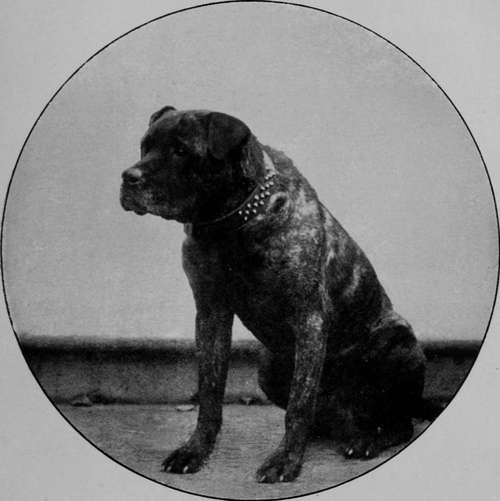

The Training, Use, And Abuse, Of Night Dogs
Description
This section is from the book "Sporting Dogs. Their Points And Management In Health, And Disease", by Frank Townend Barton. Also available from Amazon: Sporting Dogs; Their Points and Management in Health and Disease.
The Training, Use, And Abuse, Of Night Dogs
To Mr W. Burton, of Thorneywood Kennels, Nottingham (per gamekeeper), I am indebted for the following account.
" A perfectly trained and reliable night-dog is as useful to the gamekeeper as two or three additional assistants, and, indeed, I have personally heard old poachers remark that they would rather face a dozen men than half that number accompanied by one of these animals, even if resistance would be offered at all where a dog was employed against them. Such being the case, it makes one wonder why night-dogs are not more frequently used by gamekeepers in rough localities, and I am afraid the animals have come into disrepute, owing to the manner in which their employment has been abused by careless watchers.
" It must not be supposed that a night-dog simply requires rearing, and that when old enough a muzzle has only to be put on and he will face anything he is encouraged to attack. The dog must be trained to his duty as a retriever is taught to bring in game, or he will never prove a satisfactory companion when poachers are about.
"When a puppy has been procured, he should be accustomed to wear a muzzle from an early age—five months for instance—and strangers should not be allowed to pet and caress him; on the other hand, they may tease him as much as they like, providing that he is not hurt. Of all the muzzles made I prefer those with a solid piece of leather beneath the jaw, and straps round the neck and nose having buckles so that they may be manipulated as required.
The Celebrated Keeper's Night-Dog Thorneywood Terror, said to be the most perfectly trained Night Dog ever bred. (Property of Mr Burton, Thorneywood Kennels, Nottingham).
" When the dog is ten months old and quite used to wearing its muzzle, he should be taken muzzled to a quiet place where you have previously arranged for a perfect stranger to be. This man should have a bag rolled up and strapped to one hand, and a glove on the other, and should be in hiding at the appointed spot ; when the dog and his master get within a hundred yards or so, the stranger should ' break covert' and run out across the field. The dog must at once be released and encouraged to attack the man, his owner running with him the while. Upon the dog's coming up with his quarry it is the duty of the latter to buffet him with the bag, pull his tail and flank, and tease him generally. Do not let this continue too long without a break, as a muzzled dog is soon winded. His master should reach the spot as quickly as possible, encourage the animal a little, and then take him off and loosen his muzzle; after a slight rest he may be permitted another run as before.
" When the dog begins to display anxiety for the fray, the man may be provided with a thin cane, and instructed to give him a slight stroke or two, but, at this moment, great care should be taken to observe its effect. Some dogs, although game to a finish, are shy and sensitive, and a stroke with a stick will cause hesitation, not from fear of the blow, but because an impression of doing wrong is conveyed thereby. Should the dog waver at this treatment, relinquish the use of the stick for a time, and then introduce it again by degrees; if bred right he will soon commence to resent it with fury. I have known pups from the same litter to vary greatly in the development of courage, one standing any amount of stick at a year, while others would not face it until six months older.
" Such an instance I came across a short time ago. A keeper had a youngster from me and eighteen months later reported that it had been no good. I was surprised, and inquired if he had thoroughly tried the creature. ' Yes!' said he, 'I got one of the night-watchers to run across the park, and I then set the dog on him. The dog followed all right, but, when struck with a stick, returned to me, and I shot him.' This man knew I had retained one of the litter, and inquired how the puppy had progressed. I arranged for him to visit me and see the dog work, and he was surprised at what he witnessed. Afterwards I explained that an animal of this description required training, but my friend differed, and asserted that education ought not to be necessary.
"In no case should a dog be trained and tried on a lead or chain, or the result will be that he will not chase a man. Instead, he will only go for a poacher at close quarters, and then will continue to look round for his owner. Teach the dog to rely on himself. Some gamekeepers use their dogs on a long rope and religiously keep hold of the end thereof, but the reason for this I never could determine, unless it is to retain the animal for their own bodily protection. If so, the dog is not being put to its proper duty.
" A night-dog is more valuable for catching a man than for fighting one ; still, he must be taught to give battle, because it is love of the scrimmage following which causes him to give chase. A dog is certainly useful when a rough fight takes place, but he is doubly so when active poachers have a long start of their pursuers, for, if he jumps at a man, he is bound to bring his victim to the ground. Besides, if a dog refuses to chase a man, he is of no good in the case of a gang which freely stones the keepers, as then a resolute animal is a welcome assistant. The chances against the dog being hit with a stone as he makes for his assailants are ten to one, and, once he is at close quarters, stones cannot be thrown at him for fear of comrades being struck, and while the animal is busy among the party the members of it will have plenty to do to stave off his attacks, and he will allow them little leisure for pelting the keepers who must now hasten to the fight.
"To hark back. Suppose the dog goes for the man when released and shows no fear of the stick, he must then be taught to keep up the attack and not have a jump or two and then return from the fray, allowing his foe an opportunity of escaping. As a means of accomplishing this, the dog's owner should be as close to the animal as possible and encourage him to maintain the assault. When it is plainly to be seen that he is scant of breath, at once take him off, because, if permitted to become tired, the probability is that the dog will stand still, and, as the man promptly does the same, will return to his master, perhaps, regarding the affray as over. Once he acquires the much-to-be-regretted habit of doing this, it will need some patience to correct it. It is a golden rule never to unduly exhaust a youngster, and then, when age has been acquired, he will be game all day or night.
Continue to: